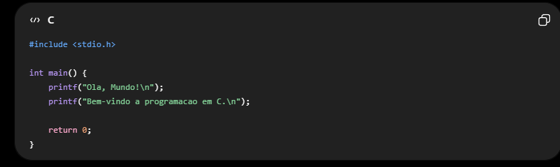
Atividade 1 – Olá, Mundo! Crie um programa que exiba: Olá, Mundo! Bem-vindo à programação emExplicação (resumida)
#include
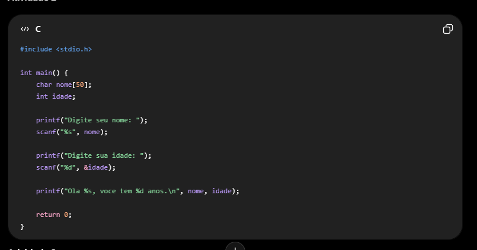
Explicação (resumida) char nome[50]: armazena o nome do usuário. int idade: armazena a idade. scanf(): lê os dados digitados. printf(): exibe a mensagem de apresentação. return 0;: encerra o programa.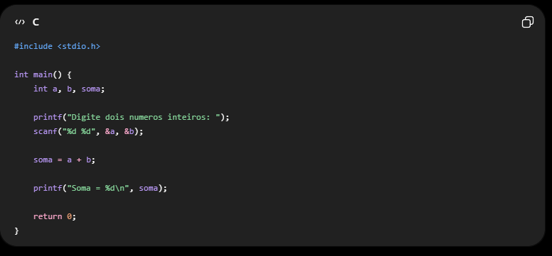
Explicação (resumida) char nome[50]: armazena o nome do usuário. int idade: armazena a idade. scanf(): lê os dados digitados. printf(): exibe a mensagem de apresentação. return 0;: encerra o programa. Exemplo de saída: Digite seu nome: Ana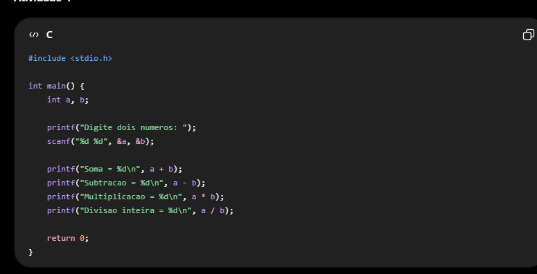
Explicação (resumida) int num1, num2: armazena os números. scanf(): lê os valores digitados. +, -, * e /: realizam as quatro operações. printf(): exibe os resultados. return 0;: encerra o programa.s <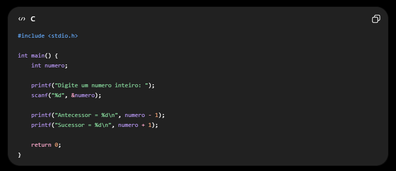
Explicação (resumida) int num: armazena o número. scanf(): lê o número digitado. num - 1: calcula o antecessor. num + 1: calcula o sucessor. printf(): exibe os resultados.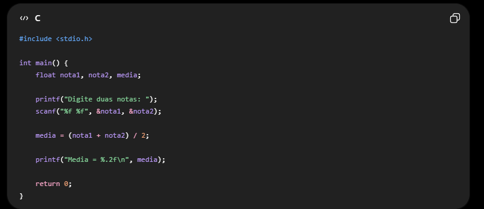
Explicação (resumida) float: armazena números com casas decimais. scanf(): lê as duas notas. media = (nota1 + nota2) / 2: calcula a média. printf("%.2f"): exibe a média com duas casas decimais. return 0;: encerra o programa.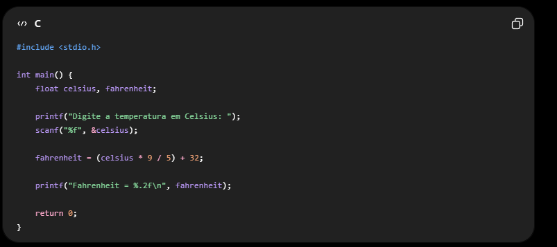
Explicação (resumida) float: armazena temperaturas com casas decimais. scanf(): lê a temperatura em Celsius. fahrenheit = (celsius * 9 / 5) + 32: faz a conversão para Fahrenheit. printf("%.2f"): exibe o resultado com duas casas decimais. return 0;: encerra o programa.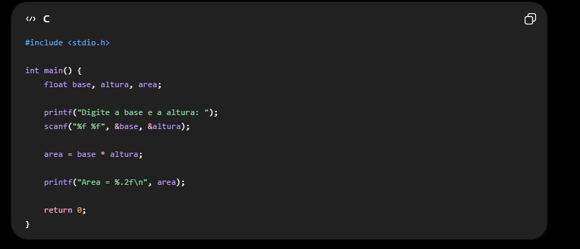
Explicação (resumida) float: armazena valores com casas decimais. scanf(): lê a base e a altura. area = base * altura: calcula a área do retângulo. printf("%.2f"): exibe a área com duas casas decimais. return 0;: encerra o programa.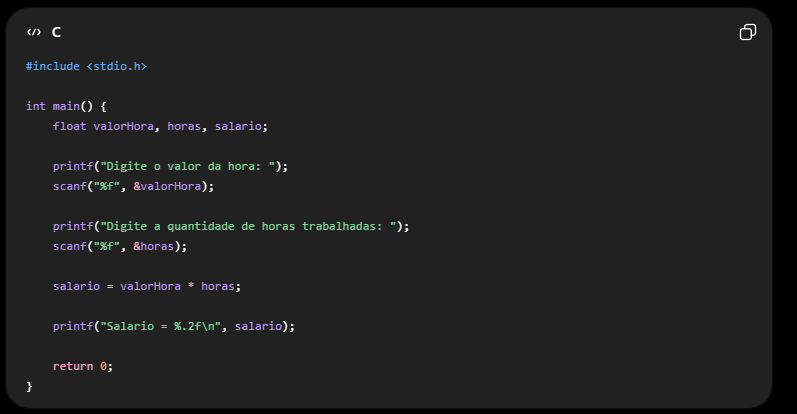
Explicação (resumida) float: armazena valores com casas decimais. scanf(): lê o valor da hora e as horas trabalhadas. salario = valorHora * horas: calcula o salário. printf("%.2f"): mostra o resultado com duas casas decimais. return 0;: encerra o programa.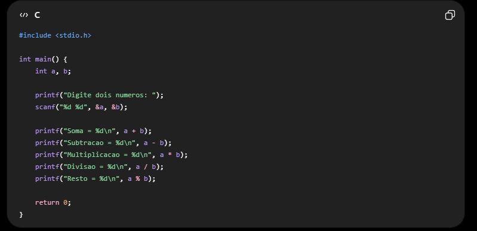
Explicação (resumida) int: armazena números inteiros. scanf(): lê os dois números. +, -, *, /: realizam as operações. %: mostra o resto da divisão. printf(): exibe os resultados. return 0;: encerra o programa.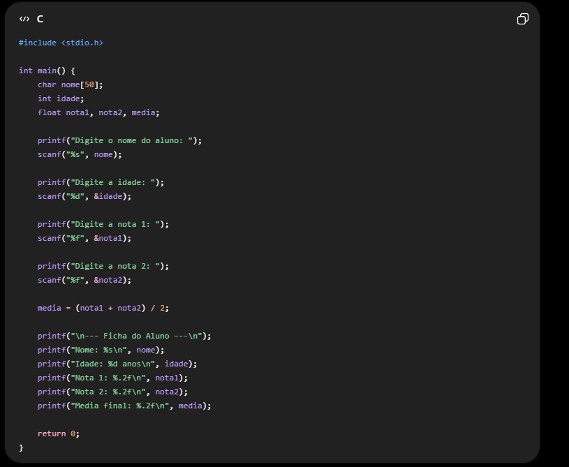
Explicação (resumida) char: armazena o nome. int: armazena a idade. float: armazena as notas e a média. scanf(): lê os dados do aluno. media = (nota1 + nota2) / 2: calcula a média final. printf(): exibe a ficha do aluno. return 0;: encerra o programa.